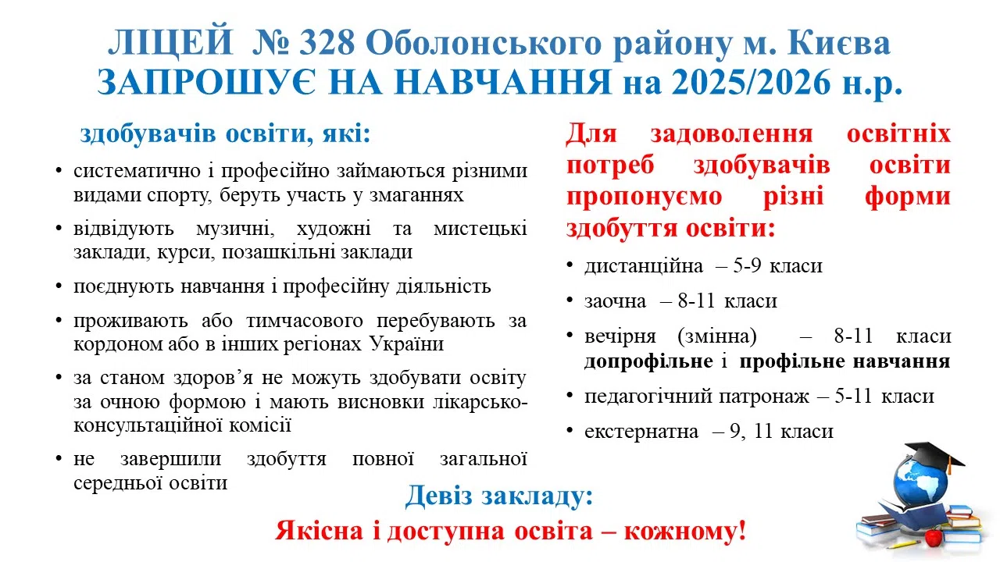

Фотогалерея
Події, матеріали та візуальна історія ліцею
Фотогалерея має бути не сховищем випадкових зображень, а охайним архівом подій: навчання, бібліотека, цивільний захист, профорієнтація, НМТ, гуртки, виховна робота.

Фотогалерея має бути не сховищем випадкових зображень, а охайним архівом подій: навчання, бібліотека, цивільний захист, профорієнтація, НМТ, гуртки, виховна робота.
